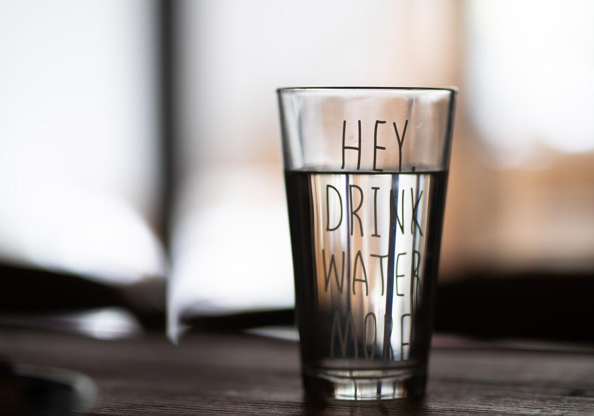

相信很多人都受不了零食的誘惑，尤其是如果克制自己一直吃零食一段時間之後，對於零食會特別的想念，就跟麥當勞的薯餅一樣，就算很久沒吃，它的那種口味跟香味就會勾起你的回憶，讓你忍不住隔天就去點一份來吃。
大家都知道「有沒有睡眠充足」是營養減脂成效非常重要的一個環節。要知道睡眠不足可能增加飢餓感。
有一項2008年的發表研究，在睡眠研究雜誌上的一個研究說，比較了九名健康正常的一個體重男性，讓他們只睡9個小時，跟只睡4.5小時，最後完全不睡，並比較三者的飢餓感不同，結果告訴我們睡眠時間越少的越容易感到飢餓感。
除了睡飽可以減少我們的飢餓感，也需要讓自己吃飽，讓自己在進食的時候可以吃進對的並且能夠吃飽的一個食物，可以大大的減少延緩我們的飢餓感，就會減少去拿零食的概率。
有時候想吃一點零食，就只是對味道的一個想念，這時候可以嘗試讓自己忙碌起來，分散想念的注意力，這種想法可以被分散掉，像我有時候就會去嘗試去打掃打掃衛生、去公園散散步，甚至可能開始工作恢復E-mail,那這一些事情不只可以讓你的想法轉移，逐漸忘掉你想吃零食的一個感覺，等你做完這些事情，吃零食的想法可能就不見了。
不過如果真的嘗試分散注意力了，還是沒有辦法讓你忘記零食的美好的話，那你就吃一點點吧，不過記得控制份量，不要過度的壓抑自己，後續產生補償心態的話，反而更容易爆吃，要記得適時地去釋放自己。
不要將特定的行為跟零食綁在一塊。它是一種關聯性的一個學習，也就是當兩個事物通常會一起出現的話，像是電影配爆米花，我們大腦中對於其中一件事情的記憶就會附帶另外一件事情。所以我們要減少特定行為，跟零食綁在一塊，進而減少自己吃零食的一個機會，像是不要固定的時間就去吃零食，不要看劇就拿著一包零食，減少制約著自己的一個行為，久而久之之後對於零食的渴望也會越來越少，也不要心情不好就在那吃零食去發洩你的情緒。
這個話題也是老生常談了，喝水很重要。有一項研究找了50位超重的一個女性，請她們喝比平常更多的一個水量，並持續了8週，最後發現她們的食慾評分是比研究前還要來得低的。也就是說，喝水可以幫助抑制食慾，可以嘗試一下在你想吃零食的時候，先喝一杯馬克杯的水，等待15分鐘，你可能就不會想吃零食了。

如果你還是想吃的話，就可以控制份量的淺嚐，或者直接吃正餐來達到減少零食的攝取。
這是一種恐嚇自己小小心靈的方式。看到那個熱量之後，真的會減少你想吃零食的一個渴望。在吃零食的時候就會克制它的一個份量，控制在200大卡以內，所以在吃零食之前看一下它的熱量跟營養標示，可以幫助可以克制對零食的渴望，與其說控制，不如說嚇嚇自己對零食的慾望吧。
零食記得放的遠一點，不要囤積零食在家裏，真的想吃的時候再去買吧，可以大大得減少純粹想吃零食的一個機會。